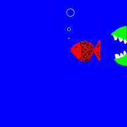

第七轮【11】棋心愉悦-一队 vs【12】天天向上队【4台】心澈vs游戏人间(胜)
首页
第一届山口团体战
#1 <font color="red">第七轮【11】棋心愉悦-一队 vs【12】天天向上队【4台】心澈vs游戏人间(胜)</font> 作者：有志青年 发表时间：2012-6-23 16:02:09
1. 比赛采用山口规则开局，执行5手N打，其他同《中国五子棋竞赛规则》
2. 比赛行棋
（1） 所有选手需用25天内完成该阶段的5盘对局。
（2） 每手棋的行棋时限为5天，不可以延迟行棋，如违反导致超时未行棋则判负。
（3） 每个选手有一次悔棋的机会，选手可在发谱后5分钟内发送正确的棋谱。但，是否被采纳由对方决定。
（4） 如选手认为后面的变化已经穷尽（即地毯）则可以发送相关棋谱。
3.比赛办法
比赛为团体赛，采用分台定人制进行，每队4人，开赛前需确定选手台次。
比赛采用单循环赛制，同台次选手间进行比赛，先手方代表队1、3台黑棋，2、4台白棋。
比赛分3个阶段进行，每个阶段进行5轮，各阶段开始时间提前通知。
名次区分：首先比较总局分，总局分高者名次列前，如相同，则依次比较场分、伯格制、1-4台得分来区分名次。
更多内容见：爱五子棋网第一届山口规则论坛团体战竞赛规则
正式比赛26日开始，可提前开始，一旦双方均进入比赛则执行规定的时间要求。
［此帖子已被 有志青年 在 2012-7-11 20:53:54 编辑过］
#2 Re:第七轮【11】棋心愉悦-一队 vs【12】天天向上队【4台】心澈vs游戏人间 作者：心澈 发表时间：2012-6-27 23:11:42
8打 ［ 花斯 于 2012-6-28 8:54:43 时花20金币送鲜花一朵］
［ 花斯 于 2012-6-28 8:54:43 时花20金币送鲜花一朵］
［ 花斯 于 2012-6-28 8:54:43 时花20金币送鲜花一朵］
#3 Re:第七轮【11】棋心愉悦-一队 vs【12】天天向上队【4台】心澈vs游戏人间 作者：游戏人间 发表时间：2012-6-28 0:19:26
交换。。。。。。。。。。。。。。。。。。。。
#4 Re:第七轮【11】棋心愉悦-一队 vs【12】天天向上队【4台】心澈vs游戏人间 作者：花斯 发表时间：2012-6-28 8:51:57
加油。。。。。
［此帖子已被 花斯 在 2012-6-28 8:53:39 编辑过］
#5 Re:第七轮【11】棋心愉悦-一队 vs【12】天天向上队【4台】心澈vs游戏人间 作者：心澈 发表时间：2012-6-28 9:13:26
#6 Re:第七轮【11】棋心愉悦-一队 vs【12】天天向上队【4台】心澈vs游戏人间 作者：游戏人间 发表时间：2012-6-28 10:37:52
#7 Re:第七轮【11】棋心愉悦-一队 vs【12】天天向上队【4台】心澈vs游戏人间 作者：心澈 发表时间：2012-6-28 11:17:36
#8 Re:第七轮【11】棋心愉悦-一队 vs【12】天天向上队【4台】心澈vs游戏人间 作者：游戏人间 发表时间：2012-6-28 15:19:57
#9 Re:第七轮【11】棋心愉悦-一队 vs【12】天天向上队【4台】心澈vs游戏人间 作者：心澈 发表时间：2012-6-30 8:50:52
#10 Re:第七轮【11】棋心愉悦-一队 vs【12】天天向上队【4台】心澈vs游戏人间 作者：游戏人间 发表时间：2012-6-30 12:02:40
#11 Re:第七轮【11】棋心愉悦-一队 vs【12】天天向上队【4台】心澈vs游戏人间 作者：心澈 发表时间：2012-7-1 23:18:01
#12 Re:第七轮【11】棋心愉悦-一队 vs【12】天天向上队【4台】心澈vs游戏人间 作者：游戏人间 发表时间：2012-7-1 23:32:26
#13 Re:第七轮【11】棋心愉悦-一队 vs【12】天天向上队【4台】心澈vs游戏人间 作者：心澈 发表时间：2012-7-3 8:39:30
#14 Re:第七轮【11】棋心愉悦-一队 vs【12】天天向上队【4台】心澈vs游戏人间 作者：游戏人间 发表时间：2012-7-3 20:51:06
#15 Re:第七轮【11】棋心愉悦-一队 vs【12】天天向上队【4台】心澈vs游戏人间 作者：心澈 发表时间：2012-7-4 11:50:45
#16 Re:第七轮【11】棋心愉悦-一队 vs【12】天天向上队【4台】心澈vs游戏人间 作者：游戏人间 发表时间：2012-7-4 11:56:40
#17 Re:第七轮【11】棋心愉悦-一队 vs【12】天天向上队【4台】心澈vs游戏人间 作者：心澈 发表时间：2012-7-7 9:10:16
#18 Re:第七轮【11】棋心愉悦-一队 vs【12】天天向上队【4台】心澈vs游戏人间 作者：游戏人间 发表时间：2012-7-7 10:26:20
#19 Re:第七轮【11】棋心愉悦-一队 vs【12】天天向上队【4台】心澈vs游戏人间 作者：心澈 发表时间：2012-7-8 11:26:31
#20 Re:第七轮【11】棋心愉悦-一队 vs【12】天天向上队【4台】心澈vs游戏人间 作者：游戏人间 发表时间：2012-7-8 12:59:19
#21 Re:第七轮【11】棋心愉悦-一队 vs【12】天天向上队【4台】心澈vs游戏人间 作者：心澈 发表时间：2012-7-10 9:17:29
#22 Re:第七轮【11】棋心愉悦-一队 vs【12】天天向上队【4台】心澈vs游戏人间 作者：游戏人间 发表时间：2012-7-10 10:16:04
#23 Re:第七轮【11】棋心愉悦-一队 vs【12】天天向上队【4台】心澈vs游戏人间 作者：屏蔽 发表时间：2012-7-10 10:19:57
真不容易。
#24 Re:第七轮【11】棋心愉悦-一队 vs【12】天天向上队【4台】心澈vs游戏人间 作者：白衣神童小剑魔 发表时间：2012-7-10 11:35:01
 悲剧的小鱼
悲剧的小鱼
［此帖子已被 白衣神童小剑魔 在 2012-7-10 11:37:19 编辑过］
#25 Re:第七轮【11】棋心愉悦-一队 vs【12】天天向上队【4台】心澈vs游戏人间 作者：心澈 发表时间：2012-7-11 9:31:11
投了